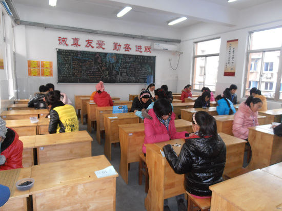
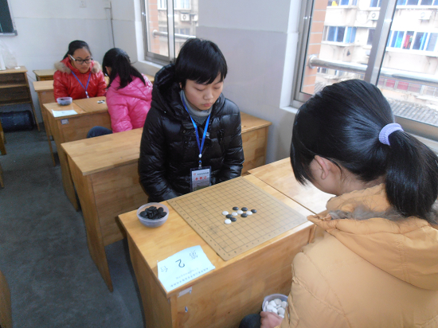
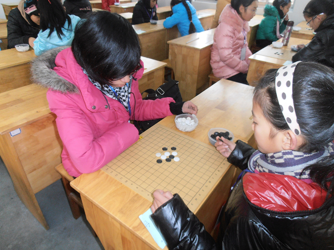
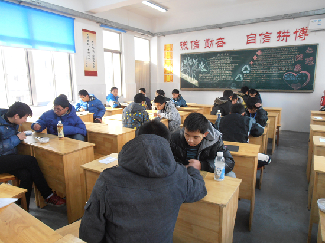
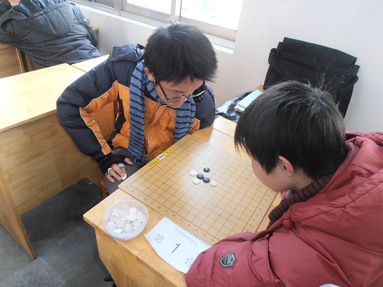
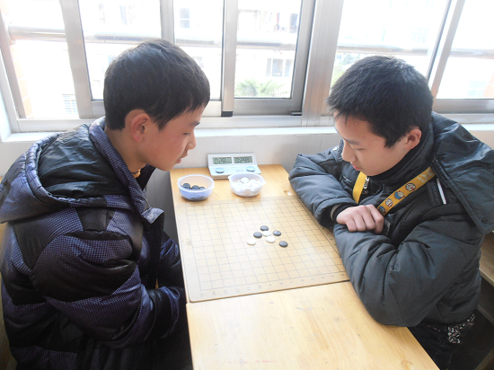

个人成绩
初中男子组
名次 姓名 俱乐部 积分 对手分 中间分 赢棋数
1 蒋陈昱, 南通市第二中学 7.5 54.0 42.5 6
2 郭钒逸, 南通市启秀中学 7.5 51.5 40.0 7
3 邓伟, 南通市北城中学 7 53.0 43.0 7
4 陈泽宇, 南通市第二中学 6.5 54.0 42.0 6
5 马俊达, 南通市启秀中学 6.5 51.0 39.5 6
6 张伟进, 南通市越江中学 6.5 49.0 39.5 5
7 蔡子杨, 海门东洲中学南校区 6.5 46.5 37.0 6
8 范佳文, 南通市天生港中学 6 51.5 40.0 6
9 席季鑫, 南通市北城中学 6 50.5 39.0 5
10 黄英男, 南通市启秀中学 6 48.5 37.5 6
11 杨锐, 南通市天生港中学 6 42.0 32.5 5
12 凌浩天, 南通市越江中学 6 40.0 31.5 6
13 胡付贵, 南通市天生港中学 6 37.5 30.0 6
14 周超群, 南通市东方中学 5.5 38.5 30.0 5
15 周新鑫, 南通市越江中学 5 48.0 37.5 5
16 王佳杰, 南通市北城中学 5 46.0 35.5 4
17 肖鑫, 南通市天生港中学 5 45.0 33.5 5
18 袁翔, 海门东洲中学南校区 5 44.0 34.5 5
朱张辰, 南通市第三中学 5 44.0 34.5 5
20 王圣飞, 南通市北城中学 5 43.0 34.0 5
21 陈飞旭, 东洲中学本部 5 42.0 32.5 5
22 许嘉宝, 南通市东方中学 5 42.0 32.0 4
23 卫宏鑫, 南通市陈桥中学 5 36.5 28.0 5
24 薛怿枫, 南通市第三中学 5 30.5 23.5 5
25 许泳康, 南通市陈桥中学 4.5 40.0 31.5 4
26 胡旭, 南通市北城中学 4.5 40.0 30.5 4
27 许泳健, 南通市陈桥中学 4.5 39.0 29.5 4
28 严佳豪, 东洲中学本部 4 47.0 37.0 4
29 王吴锐, 江苏省南通中学 4 42.0 32.5 4
30 戴金鑫, 海门中学能仁中学 4 38.0 30.0 4
31 顾飞, 南通市陈桥中学 4 38.0 29.5 4
32 王炜炜, 海门市王浩初中 4 37.5 29.5 4
33 卢律, 南通市北城中学 4 35.5 27.5 4
34 钟云龙, 海门市城北初中 4 34.0 26.0 4
35 黄伟成, 南通市东方中学 3.5 38.5 29.5 1
36 顾晖, 海门市王浩初中 3.5 29.0 20.5 3
37 李宝双, 南通市东方中学 3 37.5 28.5 2
38 贺营, 海门市城北初中 3 35.5 28.5 3
39 陈实, 南通市第三中学 3 33.0 26.0 3
40 许新元, 南通市北城中学 3 33.0 25.0 3
41 姚李光, 南通市第三中学 3 30.0 23.0 1
42 陈凯佳, 东洲中学本部 3 30.0 19.5 3
43 黄亮, 海门东洲中学南校区 3 29.0 22.0 3
44 张澳澳, 跃龙中学 3 26.5 17.0 2
45 黄家豪, 南通市第三中学 2 39.5 30.5 2
46 金湛, 南通市第三中学 2 35.5 27.5 2
47 徐亦枢, 南通市第三中学 2 34.5 26.0 1
48 仇嘉钦, 东洲中学本部 2 26.5 17.0 2
49 戴震宇, 海门东洲中学南校区 1 24.0 16.0 0
50 姜泽鹏, 海门东洲中学南校区 1 23.5 16.0 0
51 杨光, 南通市第三中学 1 21.5 14.5 0
初中女子组
名次 姓名 俱乐部 积分 对手分 中间分 赢棋数
1 朱 悦, 南通市启秀中学 8 50.0 38.5 8
2 陆梦溪, 南通市越江中学 7.5 48.0 37.0 7
3 王 玉, 南通市天生港中学 7 48.5 38.0 7
4 顾 玲, 南通市跃龙中学 6.5 49.0 38.0 5
5 王加益, 南通市第二中学 6.5 48.0 37.5 6
6 胡 敏, 江苏省南通中学 6 47.0 36.0 6
7 余英德, 南通市北城中学 6 45.0 33.5 6
8 刘维维, 南通市越江中学 6 44.5 35.0 6
9 王亦婷, 南通市天生港中学 6 43.5 36.0 6
10 钱雨姗, 南通市第二中学 6 40.5 33.0 6
11 陈楠钰, 南通市北城中学 5.5 56.0 44.0 5
12 俞鑫谊, 南通市北城中学 5.5 38.0 29.0 5
13 石 玉, 南通市启秀中学 5 48.5 38.5 5
14 袁中原, 江苏省南通中学 5 45.0 33.5 5
15 白钰航, 南通市陈桥中学 5 44.0 34.0 5
16 茅 薇, 南通市东方中学 5 43.0 32.5 5
17 余 健, 南通市北城中学 5 43.0 32.0 5
18 黄汝佳, 南通市东方中学 5 38.5 30.0 5
19 朱 蕾, 南通市北城中学 5 36.0 27.0 5
20 胡小雨, 海门市城北初中 5 35.0 28.0 4
21 陆 慧, 南通市东方中学 5 34.0 26.5 5
22 詹伊可, 海门东洲中学南校区 4 46.5 35.5 4
23 施宇恒, 海门东洲中学南校区 4 44.5 35.0 4
24 徐 荣, 南通市第三中学 4 40.5 30.0 2
25 冯佳佳, 南通市北城中学 4 40.0 30.0 3
26 陈国蕾, 海门市城北初中 4 39.5 30.5 3
27 张 霄, 南通市天生港中学 4 39.5 30.0 4
28 钱炀, 海门市王浩初中 4 38.0 29.5 3
29 王 悦, 南通市第三中学 4 37.0 29.0 4
30 张逍雅, 南通市第三中学 4 35.0 27.5 4
31 李小可, 南通市第三中学 3.5 39.0 31.5 2
32 茅舒婷, 南通市东方中学 3.5 34.5 27.0 3
33 王薇, 海门市城北初中 3.5 34.0 27.0 3
34 黄天骄, 海门东洲中学南校区 3 45.5 34.5 3
35 张黄小奥, 海门中学能仁中学 3 44.0 34.0 2
36 刘佳敏, 南通市陈桥中学 3 31.0 23.5 3
37 孙俊君, 海门中学能仁中学 3 28.5 22.5 2
38 顾嘉倩, 海门市王浩初中 2 35.5 28.0 1
39 胡 h, 南通市北城中学 2 30.0 22.5 1
40 范绮梦, 南通市天生港中学 2 27.0 18.5 2
41 秦范玲, 海门东洲中学南校区 1 27.0 18.0 1
42 陆嘉宁, 海门东洲中学南校区 1 21.5 14.0 1
赛场掠影





这次比赛不做带队老师不需要关注学生往返的接送、吃饭、休息……
这次比赛不做教练不需要每盘结束后复盘，每盘开始前准备开局变化……
这次比赛只做裁判，看戏的感觉真好！